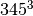
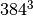
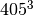

Cubic permutations¶
Problem 62
The cube, 41063625 (), can be permuted to produce two other cubes: 56623104 () and 66430125 (). In fact, 41063625 is the smallest cube which has exactly three permutations of its digits which are also cube.
Find the smallest cube for which exactly five permutations of its digits are cube.
Solution
Choice 1: Generate many cubes and check for permutation? May require saving LOTS of cubes. millions? Quick permitation test is split digits and check for same set.
Choice 2: Generate a cube and examine all permutations to see which variant is another cube. Don’t have to save anything. (This is too slow.)
-
euler62.digits(n)¶ -
An iterator over the digits in a number. Parameters: n – A number Returns: iterator over the digits
def digits( n ):
"""
>>> list( digits( 41063625 ))
[5, 2, 6, 3, 6, 0, 1, 4]
"""
while n != 0:
yield n % 10
n = n // 10
Collapse a sequence of digits to a number.
def number(d_list):
"""
>>> number( reversed( [5, 2, 6, 3, 6, 0, 1, 4] ) )
41063625
"""
n= 0
for d in d_list:
n = n*10 + d
return n
Faster.
def make_cubes(permutations=3, limit=1000000):
"""
>>> make_cubes(3)
[41063625, 56623104, 66430125]
"""
cubes= dict()
for i in range(1,limit):
number = i**3
d_counter= tuple(sorted(digits(number)))
if d_counter in cubes:
cubes[d_counter].append( i )
if len(cubes[d_counter]) >= permutations:
return [c**3 for c in cubes[d_counter]]
#return min( c**3 for c in cubes[d_counter] )
else:
cubes[d_counter]= [i]
Too slow.
May benefit from memoizing all integer cubes to save computing cube root of each permutation.
from itertools import permutations
from math import exp, log
def make_permutations(permute_count=3, limit=500):
for i in range(1,limit):
n = i**3
matches = set( [i] )
d = list(digits(n))
for p in permutations(d):
r_3= int(exp(log(number(p))/3))
if r_3**3 == number(p) and r_3 not in matches:
matches.add( r_3 )
if len(matches) >= permute_count:
return matches
Test the module components.
def test():
import doctest
doctest.testmod(verbose=0)
Compute the answer.
def answer():
ans= min( make_cubes(5) )
return ans
Confirm the answer.
def confirm(ans):
assert ans == 127035954683, "{0!r} Incorrect".format(ans)
Create some output.
if __name__ == "__main__":
test()
ans= answer()
confirm(ans)
print( "The smallest cube for which exactly five permutations of its digits are cube:", ans )